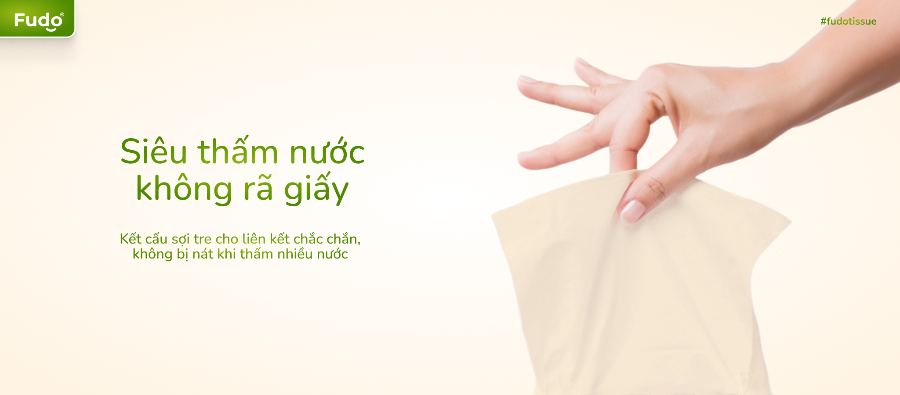

Tại sao nên dùng khăn giấy làm từ tre?
Giấy vệ sinh (khăn giấy và giấy dùng trong WC) ngày càng trở thành vật liệu tối cần thiết trong mỗi gia đình. Thế nhưng, việc sử dụng giấy vệ sinh cũng gây ra nhiều vấn đề môi trường đáng quan tâm.
Khăn giấy bền vững
Khăn giấy bền vững
Khăn giấy bền vững
Khăn giấy bền vững
Khăn giấy bền vững
Hầu hết các thương hiệu khăn giấy hay giấy vệ sinh lớn trên thế giới đều đang theo đuổi mục tiêu lấy những chứng nhận bền vững cho các sản phẩm của họ (dù phần lớn là hình thức). Đó là sản xuất từ nguồn nguyên liệu tái chế hoặc nguyên liệu có nguồn gốc bền vững. Tuy nhiên, nếu nguồn từ gỗ khai thác thì dù có chứng nhận bền vững đi chăng nữa thì cuối cùng vẫn là chặt cây và phá rừng. Trong khi đó vẫn có những biện pháp đỡ tác động hơn như dùng giấy tái chế hoặc các nguyên liệu thân thiện hơn gỗ.
Tuy nhiên, việc sử dụng nguồn giấy tái chế trong sản xuất khăn giấy và giấy vệ sinh ngày càng trở nên ít đi bởi vì nhu cầu của người tiêu dùng thích khăn giấy mềm hơn và các nhà sản xuất cũng đua nhau làm ra các loại giấy ngày càng cao cấp hơn để cạnh tranh nhau. Dù sử dụng nguyên liệu tái chế ít tác động với môi trường do không phải chặt cây, ít phải sử dụng hóa chất tẩy trắng độc hại hơn và ít nước thải hơn, nhưng các nhà sản xuất vẫn thích dùng bột gỗ nguyên chất từ rừng hơn.
Các công ty sản xuất khăn giấy đổ lỗi cho người tiêu dùng không mua khăn giấy làm từ sản phẩm tái chế, mà ngược lại, người tiêu dùng ngày càng lựa chọn giấy vệ sinh và khăn giấy cao cấp hơn, mềm hơn so với trước. Tuy nhiên, như các tổ chức môi trường chỉ ra, các công ty không chỉ tập trung đáp ứng nhu cầu của khách hàng mà họ cũng là kênh quan trọng để giáo dục và thay đổi thói quen của người tiêu dùng. Nếu họ muốn họ có thể định hướng được người tiêu dùng và có trách nhiệm tạo ra sản phẩm bền vững hơn.
Sự nổi lên của khăn giấy và giấy vệ sinh làm từ tre
Sau nhiều năm bị phương Tây bỏ qua, tre đang tìm đường đi vào nhiều sản phẩm trong đó có khăn giấy như một nguồn nguyên liệu bền vững hơn nhiều so với cây rừng. Về phân loại thực vật học, tre là loại cây thân thảo, tức là một loại cỏ nên chúng không được coi là cây gỗ.